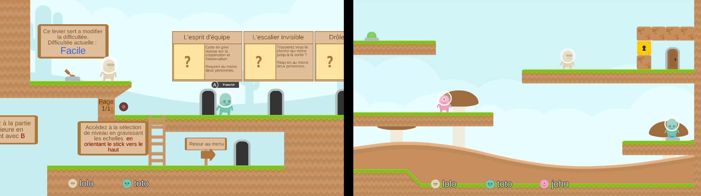

Le projet smartEnigma a vu le jour dans le cadre des UVs NF28 et IA04.
L'objectif : concevoir un jeu-vidéo multijoueur de résolution d'énigmes collaboratives.
Le jeu se base sur un système interactif original qui cherche à retrouver la convivialté d'une partie sur console de salon mais avec moins de contraintes techniques. Pour jouer, il suffira donc de disposer d'un ordinateur (qui fait office de console) et de smartphones (qui font office de manettes).
Outre l'importance à accorder au gameplay et à un certain aspect ludique, l'application se doit aussi d'être accesible à tous et facile d'utilisation
Le jeu est hébergé sur un ordinateur auquel se connectent les smartphones via un réseau WiFi. Pour cela, smartEnigma exploite les possibilités du moteur de jeu Unity3D. Côté smartphone, la manette se présente sous la forme d'une web-application accessible via une simple URL à entrer dans un navigateur. Cette partie fait appel à des techologies web telles que HTML 5, CSS 3 et Javascript.
Après 2 mois de développement, nous sommes fiers de vous présenter un premier prototype de l'application smartEnigma.
Nous avons assez vite constaté que le choix de développer une web-application, malgré l'accessibilité qu'elle permet, nous rend aussi tributaires d'éventuels problèmes de réseau (perte de connexion, signal trop faible, latence...). Le choix d'une manette sur écran tactile a aussi ses limites en termes d'ergonomie, cependant les interaction possibles restent tout de même très simples.
A l'heure actuelle, 3 énigmes simples (pour la prise en main) et 2 énigmes difficiles solvables à 2 ou 3 joueurs minimum sont implémentées. La suite du développement consisterait donc principalement en l'ajout de nouvelles énigmes pour améliorer la durée de vie du jeu. Le joueur peut intéragir avec des levier, des boutons poussoirs, des caisses et des clés/serrures, il serait intéressant d'enrichir le nombre d'objets interactifs pour proposer des expériences de jeu plus variées et des énigmes plus complexes. Enfin, comme dans tout jeu, il conviendrait de mettre en place un système de scores et de récompense lorsque les joueurs terminent une énigme.
Benjamin ROELANDT - Loïc LERAT - Thomas JEAN-LOUIS - Raphaël CHARLES